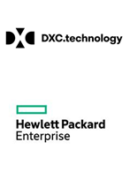
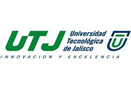

About me
I have a Bachelor degree in Computer Science engineering from Universidad del Valle de Atemajac (UNIVA), I consider myself to be a pro-active self-taught person who loves to learn new things, provide ideas and contribute with others.
Some of my skills are release management, configuration management, automation using python and javascript, I am certified in ITIL v3.0, JAVA. Plus I have knowledge on Agile methodology, DevOps and AWS services.
During my free time I enjoy having quality time with my family, movies, play video games and work out
|

|
Release and Deployment Management (2014 - 2019)
As member of the Release and Deployment Management team (RDM), I work hand to hand with the application owner representatives, project managers and release managers to get the correct release configuration, release documentation and to make sure that all the required support related items are delivered in a timely manner. I have the following areas of support under my scope:
- Change management
- Knowledge Management
- CMDB Configuration Management
- Application Monitoring configuration setup
- Post Major Incident support
- New application onboarding coordination
I contributed with some automation tools using excel macros, javascript and python to improve my team activities, below are some of the key projects I have participated
- HP SMO 2015
Contributed as RDM to the company split, reviewing every new/cloned application for HPI and HPE, keep the CMDB aligned and supportability of the applications under my scope.
Velocity Decommission Program 2016
Contributed to the legacy application infrastructure cleansing by decommissioning unused infrastructure and removing legacy not used applications.
- FAST program 2017
Accelerated program to get Microfocus company applications on boarded and transferred to the ITIO support model. Contributed by participating with multi-disciplinary teams on infrastructure compliance, support requirements and CMDB updates.
- DXC Shared Exit program 2018
As RDM subject matter expert, I was responsible to get new people resources fast on track providing release creation training, documentation, release setup and CMDB configuration plus some other key support related information for their applications to follow the company standards.
|
|
|
Developer (2013 - 2014)
As a member of the Operations process improvement and automation team, I developed several Excel Macros and Web tools to automate internal processes of the organization, the languages and technologies I used were Visual Basic for applications, Javascript, SharePoint workflows and SQL.
|
|
|
IT Support Engineer (2011 - 2013)
As IT support engineer oversaw and resolved customer tickets from more than 300 applications as part of the Enterprise Group support team, other than solving user tickets I was responsible for having these applications working properly and in compliance with the support SLA’s. This position gave me the opportunity to work with multi-disciplinary teams across the world and expand my technical knowledge with different operating systems and web technologies.
|
|
|
Image and Printing Group Metrics and Report Automation (2008 - 2011)
As member of the Image and Printing organization my activities were to maintain, support and create ad-hoc metric reports for the daily operation, reporting data from America, Europe and APJ regions, the reports were hosted on a local server all the information were pulled from SQL databases and SAP, transformed with SQL Data Transformation Services and reported using Business Objects software
|
|

|
Java Web Developer (2005 - 2008)
As Java Developer for a web application, my responsibilities were grab the requirements, work on the application and database design, develop the solution, test and support.
|
{%endblock%}